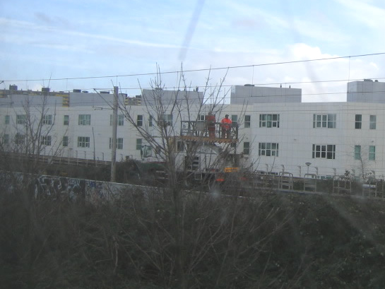
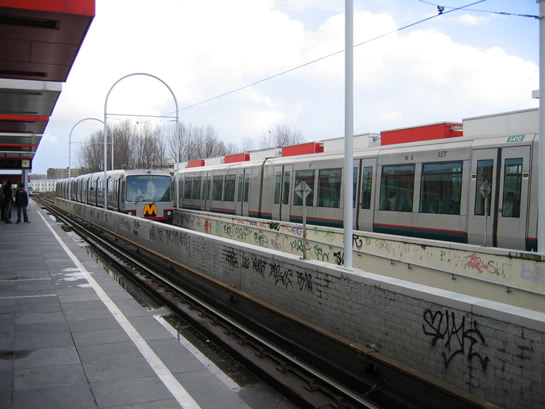
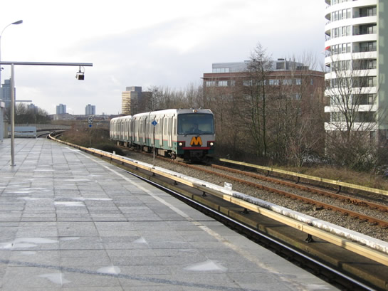
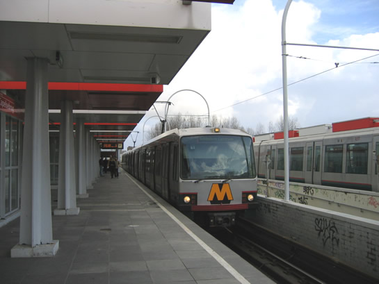

Beschadigde bovenleiding veroorzaakt vertragingen...
- dinsdag 09 december 2008 10:23
- Geschreven door Joachim
Vandaag waren er flinke vertragingen als gevolg van een defecte bovenleiding op het sneltramtraject tussen de stations Capelsebrug en Schenkel. Omstreeks 12:00 verspeelde een metrodienst richting Oost een pantograaf, waardoor de bovenleiding los kwam te hangen over een lengte van circa 100 meter. Spoor 2, het spoor dat door metro's richting Ommoord en Zevenkamp wordt gebruikt, raakte als gevolg daarvan onbruikbaar. Er moest vervolgens enkelspoor worden gereden via spoor 1 tussen de stations Capelsebrug en Prinsenlaan, treinen richting Ommoord en Zevenkamp wisselden van spoor bij wisselcomplex Prinsenlaan. Passagiers op de Calandlijn werden geconfronteerd met vertragingen die konden oplopen tot een half uur.
De bovenleidingwagen 2038, een werkrijtuig dat wordt gebruikt voor het herstellen van bovenleidingen van tram en sneltram, werd opgeroepen. Omstreeks 13:30 werd deze bij kruising 's Gravenweg op het spoor gezet, waarna werd begonnen aan het herstellen van de beschadigde bovenleiding.

Bovenleidingwagen 2038 werd gebruikt om de bovenleiding te herstellen: hier actief op het zogenaamde omschakelpunt, waar metro's richting Ommoord en Zevenkamp veranderen in sneltrams door de pantografen te laten stijgen.
Om de vertragingen enigszins te beperken, werden metro's richting Capelle aan den IJssel omgeleid via emplacement 's Gravenweg. Passagiers die vanuit Ommoord en Zevenkamp kwamen moesten overstappen op station Kralingse Zoom in plaats van station Capelsebrug. Dit veroorzaakte nogal wat verwarring bij de passagiers. De metro's naar Capelle aan den IJssel die via het emplacement reden konden niet halteren op station Capelsebrug, waardoor een flink aantal passagiers mee moest rijden naar Slotlaan om vervolgens weer terug te rijden naar Capelsebrug. Tussen station Capelsebrug en wisselcomplex Slotlaan werd er enkelspoor gereden via spoor 1. Wagendienst 569 richting Capelle aan den IJssel, die omstreeks 14:40 aankwam op Capelsebrug, werd gekeerd op het keerspoor ten oosten van het station.

Door de buiten-diensttunnel (spoor 352) met passagiers richting Capelle aan den IJssel, je ziet het niet elke dag gebeuren. Normaal gesproken wordt dit spoor alleen gebruikt door uitrukkende en inrukkende treinen.

Er werd ook gebruik gemaakt van spoor 351, een aftakkend spoor naar remise 's Gravenweg ten noorden van station Capelsebrug waar normaal gesproken ook geen passagiersdiensten rijden.

Enkele bestuurders vergaten de pantografen te laten zakken, maar het is onmogelijk om met een nog opstaande pantograaf verder te rijden.
Rond 17:10 was de bovenleiding hersteld en werd er weer spanning opgezet. Dienst 557 mocht omstreeks 17:15 als eerste stapvoets de herstelde bovenleiding van spoor 2 uitproberen. De volgende diensten richting Ommoord en Zevenkamp mochten met de toegestane sectiesnelheid rijden (de normale snelheid die geldt voor een sectie, zie de ATB informatiepagina). Om 17:23 werden beide sporen weer volledig in gebruik genomen. Het rijtuignummer van het metrostel dat zijn pantograaf verspeelde is vooralsnog onbekend, het betrof in ieder geval een rijtuig type T.
AHOB-installaties ontregeld
Als gevolg van het enkelspoorbedrijf en de aanwezigheid van de eerder genoemde bovenleidingwagen raakten de AHOB-installaties 's Gravenweg en Prins Constantijnweg ontregeld, de Automatische Halve Overwegbomen. De AHOB-installaties gingen in de zogenaamde noodsluiting, met als gevolg flinke hinder voor het autoverkeer. Autoverkeer en fietsers moesten voorzichtig de kruisingen slalommend passeren, sneltrams moesten eveneens stapvoets passeren.